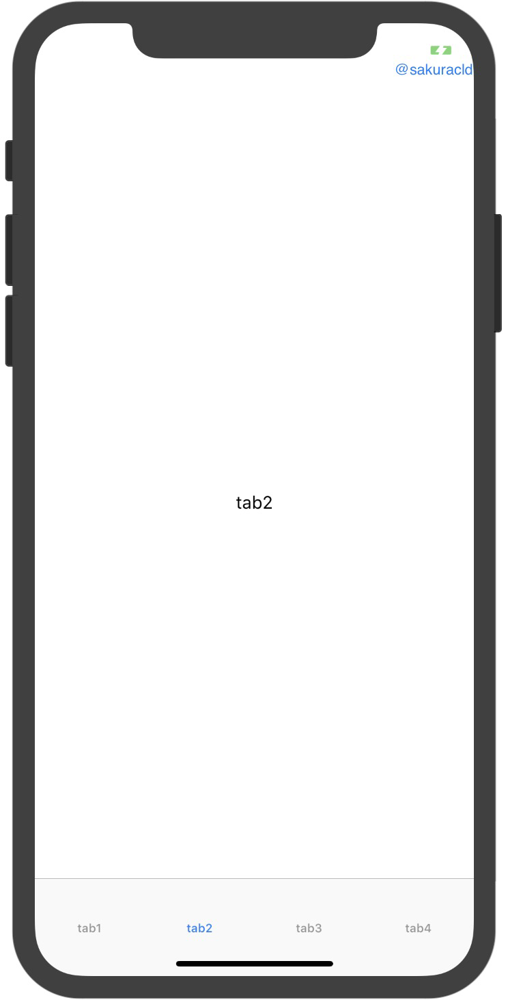
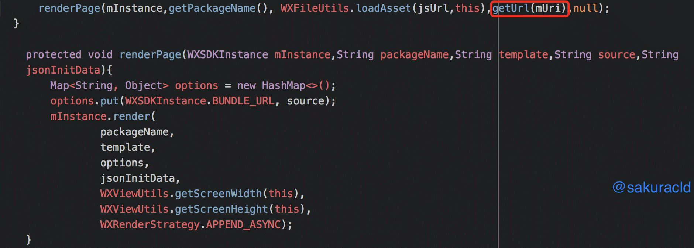

cld's notes
{每天进步一点点}
Weex与原生底部tab的那些事
weex的上层语言，大家用的最多的可能就是vue了，而vue大家写的最多的可能也是单页spa模式，当然weex也提供了vue全家桶那一系列，你可以用vue写底部tab，router路由。但是native端完全没必要啊，原生本就有视图前进后退等操作，weex也已封装了navigator模块，而且首次完全没必要加载所有文件。
然后大家可能就会说，那底部tab用什么写，你让我写oc，你让我写java，nonono，你让我一个前端干这个，说实话，我也很抓狂，最后真的很感谢公司native开发的同事，感谢他们能抽空指导帮助我们，真的特别感谢O(∩_∩)O~~~我已封装好一个简单的带有原生tab的weex ios项目，如果能帮到你的话，欢迎去我的微博留个爱心啊~。

现在看起来当初的纠结，其实就是心里在默默说我只是一个写js的，我肯定不行，这怎么可能，其实上网一搜很多原生这块的代码。weex脚手架初始化的ios项目里面，可以看到在WeexSDKManager.m加载了js，也就是入口，在这里面做做手脚就行了。
最后就是安卓了，安卓要稍微麻烦些，不过原理也类似，常用的原生底部tab，用fragment加载js，网上一搜很多的，后续有时间如果有必要我会更新在git上的。还需要提醒大家的一点是，安卓封装的navigator，在WXPageActivity.java如下图需要自己把url路径传过去，这样你才能在vue里面获取到bundleUrl，如果你的url里面带的有参数的话，这就很重要了，希望能帮到你~。

最后的最后，欢迎大家下载我们的app，新浪众测ios版，免费体验一把weex，安卓端敬请期待。第一次写博客，多有不足，欢迎大家在我的微博指出一起交流学习，如果可以的话去点个赞也是很开心的@sakuracld，你们的鼓励是我坚持下去的动力，感谢~。